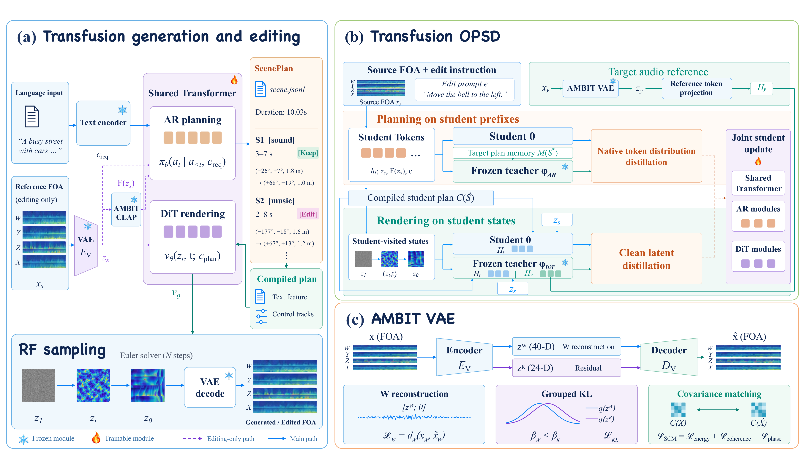

AMBITSpatial Audio Generation and Editing
with Executable Plans and
Self-Distilling Transfusion
1 HKUST2 Noiz AI3 Independent Researcher4 University of Washington
Headphones recommended for the best spatial audio experience.
Abstract
Spatial audio authoring coordinates source decisions with soundfield synthesis. For editing, plans specify what to change and retain, while reference audio supplies further acoustic detail. We present AMBIT, a unified framework for native First-Order Ambisonics (FOA) generation and editing with three connected contributions. First, a shared Transfusion backbone couples autoregressive planning with rectified-flow rendering through executable ScenePlans that specify source content, activity, and 3D trajectories. For editing, the plan describes the full target scene, including retained sources; contrastive features ground the requested change, while full reference latents supply residual acoustic detail for preservation. Second, an FOA-aware continuous VAE combines shared-decoder omnidirectional recovery, asymmetric grouped KL, and spatial covariance matching to preserve content and inter-channel structure. Third, joint Transfusion on-policy self-distillation (OPSD) refines planning on student-generated prefixes and rendering at sampling states reached under student plans, with target-conditioned teachers supervising both modes of the shared student. Evaluations across speech, music, and sound show improved generation content and spatial quality, acoustic fidelity during instruction-guided editing, and unedited-source preservation over the compared baselines.
